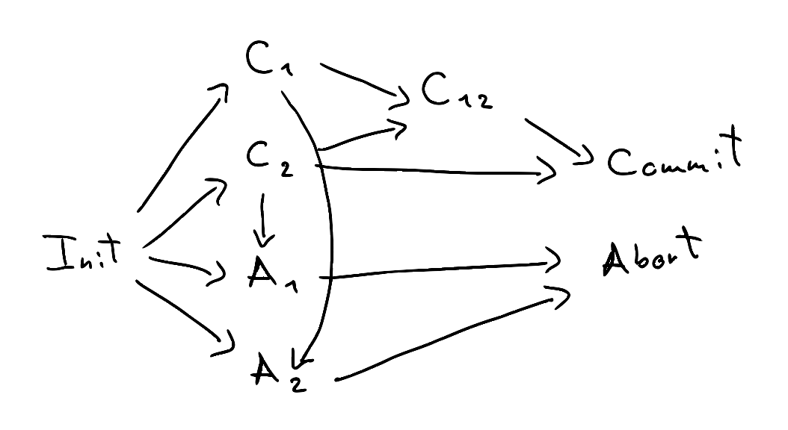

The following note defines a notion of similarity for labelled-transition systems (LTS) and shows how, by placing certain finiteness conditions on the LTS, similarity can be iteratively computed. None of what follows is novel, and is sourced from Davide Sangiorgi's excellent introduction to coinduction and bisimulation.
An LTS is a triple \((Pr, Act, \rightarrow)\), where \(Pr\) is the set of processes (states), \(Act\) is a set of actions (labels), and \( \rightarrow \subseteq Pr \times Act \times Pr \) is the transition relation. We will write \( P \rightarrow_{\mu} Q \) for \( (P, \mu, Q) \).
A simulation is a relation \( R \subseteq Pr \times Pr \) such that if \( (P, Q) \in R \), then
- for all \( P' \) such that \( P \rightarrow_{\mu} P' \), there exists a \( Q' \) such that \( Q \rightarrow_{\mu} Q' \) and \( (P', Q') \in R \).
Similarity, denoted by \( \le \), is the union of all simulations; additionally, it too is a simulation. When \( P \le Q \) we say that \( Q \) simulates \( P \) (note the order is reversed).
For example, the following LTS models a two-phase commit protocol with two clients, while keeping track of which clients have committed (C) or aborted (A). The transitions are unlabelled because we have only one action (e.g. \( \mu \)):
. If we want to model the protocol at a higher level, we can decide not to keep track of the state of the clients:

We then need a way to relate the two models: we can use similarity to that effect. We can see that \( Init \le Init' \), all the C and A states are simulated by Procc, \( Commit \le Commit' \), and \( Abort \le Abort' \).